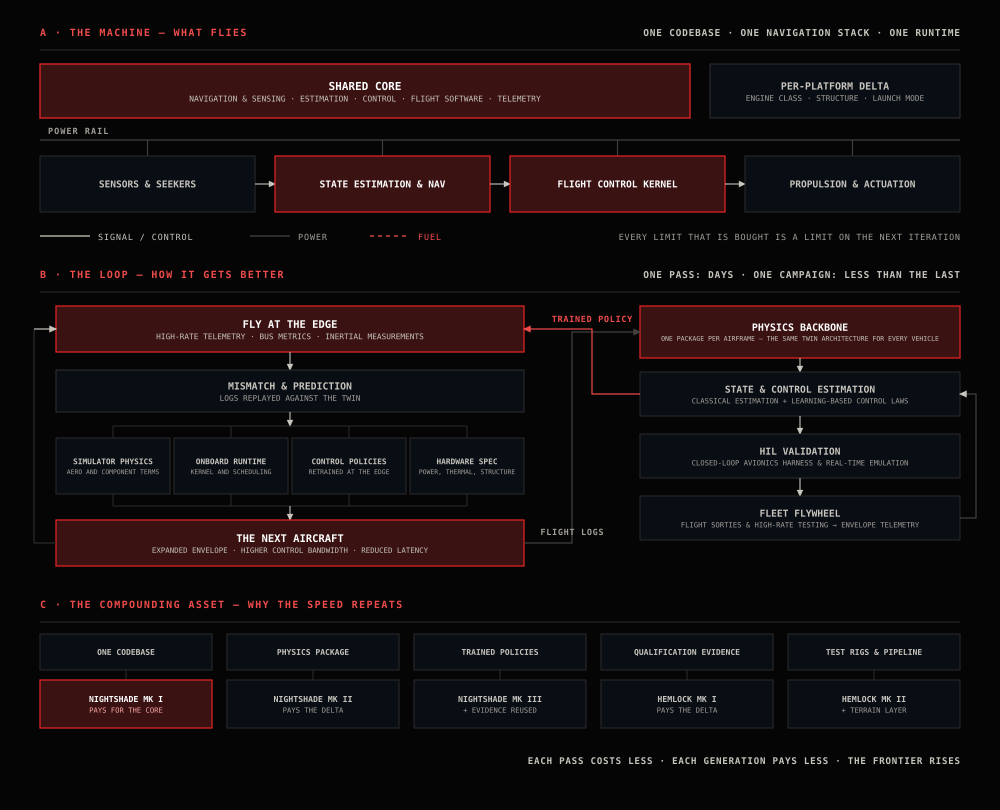
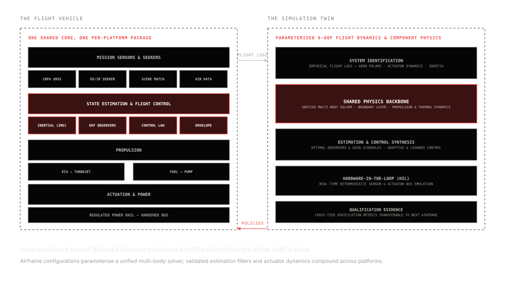

The shared core, in hardware, software and method
Apollyon structures strike weapon development around a permanent engineering method. The same discipline—identification, simulation, hardware-in-the-loop verification, empirical validation—is applied to every new missile airframe, and what one programme learns is folded into the next. A new vehicle still needs structural integration, aerodynamic packaging and its own guidance implementation, but it starts from proven models, tooling and qualification evidence rather than a blank sheet.
This document defines the physical mechanisms, computational pipelines, and mathematical models that govern that shared architecture.
Where the limit comes from
Commercial supply chains supply individual drone components, but system performance derives from subsystem integration. The operational limits of high-speed uncrewed aircraft—terminal speed, maneuver g-load, and electronic warfare survivability—are determined by battery thermals, bus communication latency, and the physical accuracy of simulation models.
A fully off-the-shelf airframe and autopilot impose their own limits, and generic flight simulators fail to capture cross-axis aerodynamic coupling at high dynamic pressures. Apollyon's advantage comes from what it authors: the control-law and guidance packages that push a proprietary flight-control baseline to each airframe's regime, the mission and perception compute that runs alongside it, battery discharge dynamics, and mission-matched composite structures. Standard passive components and raw materials are procured across diversified supply lines, as documented in the supply chain review.
Ownership of the authored layer enables rapid iteration. Because the flight package is ours and the baseline is configurable, telemetry from each flight directly updates the physics models and the next tuning cycle.
Core vehicle architecture, functional view
Navigation, flight control, propulsion and actuation operate over a unified electrical and data bus. This functional architecture standardises avionics across the Nightshade effector family; Hemlock applies the same functional layout at a larger scale with its own guidance and navigation implementation.
Reading the diagram
| Block | What it does | Why it matters |
|---|---|---|
| CRPA antenna + multi-band GNSS | Spatial null-steering against jammers; positioning across L1/L2/L5 on GPS, GLONASS, Galileo and NavIC. | Primary position source when it is available — and it is the source the adversary attacks first. |
| Pitot tube + air data computer | Airspeed and altitude derived independently of satellite input. | Keeps the state estimate honest during GNSS dropouts. |
| INS | Carries attitude and position through GNSS denial. | Drift is a function of time and grade, not of jamming power. |
| Tonbo EO/IR seeker | Closes terminal guidance on an electro-optical or infrared lock, with no RF dependency. | Terminal accuracy that no jammer in the theatre can touch. |
| Scene matching (DSMAC) | Downward optical correlation against stored terrain and imagery. | Resets inertial drift midcourse without transmitting anything. |
| Flight controller | Fuses every navigation input into one state estimate; runs guidance and control law; commands propulsion and every actuator. | The single integration point. Nothing else in the architecture talks directly to anything else. |
| Telemetry | Dedicated downlink off the flight controller; status, position, health — and the mission-abort channel. | Loss of link degrades visibility, not flight safety. |
| ECU + turbojet | Thrust is a closed loop the controller supervises: the ECU throttles the turbojet and commands the fuel pump. | The controller sets the thrust target; the propulsion loop handles how to get there. |
| Actuation | The only path from a software decision to physical motion; count and placement scale per platform. | The control path does not change — only the surfaces being moved. |
| Power | One hardened power unit feeding a single distribution rail to every subsystem. | One rail to harden and qualify, rather than six separate supply paths. |
Core vehicle architecture, software view
One proprietary autopilot baseline operates across the Nightshade family. Vehicle variations execute as versioned configuration packages rather than separate code branches, so a validated change propagates across the line without touching the flight-critical core. Hemlock takes the method and the qualification evidence onto its own implementation.
Three architectural constraints govern this software stack:
First, the state estimator serves as the sole consumer of raw sensor inputs. Guidance algorithms and flight controllers receive a single fused probabilistic state estimate rather than asynchronous sensor streams.
Second, the control core runs one fused state estimate and scheduled control laws. Gains, envelope limits and actuator allocation are set from an empirically identified vehicle model, preserving control authority at edge flight envelopes (§05).
Third, mission management separates cleanly from core flight dynamics. Waypoints, digital terrain-following corridors, optical terminal tracking, and geofence abort triggers run as configurable mission scripts within a common runtime, allowing one mission runtime to direct a 300 km one-way effector or a 500 km long-range variant.
| Layer | Functions | Character |
|---|---|---|
| Mission & autonomy | Mission ingest, route and terrain following, terminal phase management, autonomy supervisor, abort. | Per-platform configuration of a shared runtime. |
| Estimation & control | State estimation, guidance law, scheduled control law, envelope protection. | The compounding core — one baseline across the Nightshade family, tuned per airframe package. |
| Platform services | Deterministic scheduling, health and FDIR, high-rate logging, telemetry encoding. | Worst-case design, not average-case. |
| Foundation | Proprietary flight-control baseline (Veronte Embention), hardware abstraction, per-platform configuration packages, HIL bench. | Vendor-maintained core; packages owned and versioned by Apollyon. |
| Cross-cutting | EW hardening, cyber, qualification evidence per subsystem. | Evidence packages are reused across platforms and jurisdictions. |
The machine, its twin, and the loop
Hardware flight trials represent half of the development process. The remaining half consists of a persistent system identification pipeline: a high-fidelity digital twin calibrated against instrumented flight data, and an automated software update loop that translates flight test data into verified hardware and software revisions.

The digital twin and system identification
Control-law tuning depends entirely on the physical fidelity of its simulation model. Conventional simulators model nominal linear aerodynamics, which break down during high-speed, high-incidence flight. Apollyon operates a unified simulation architecture in which individual airframes exist as parameterised configurations rather than separate software codebases. Flight test logs calibrate the model after every campaign: lift and drag polars, control-surface hinge moments, rotational moments of inertia, motor thermal curves, and electrical bus transient drops are resolved to specific physical terms rather than lumped noise parameters.
A secondary online diagnostic network processes live telemetry to detect external disturbances—such as sudden mountain gusts, actuator thermal degradation, and cell voltage dips. This real-time state estimate allows the primary flight controller to compensate immediately for environmental extremes outside nominal pre-flight profiles.

The iteration loop
Instrumented flight sorties collect high-rate telemetry across all structural, electrical, and control channels. Within hours of recovery, data pipelines convert each test into four direct outputs: updated coefficients in the flight dynamics model, verified execution timings for the real-time kernel, retuned control laws for edge envelope boundaries, and structural tolerances for subsequent manufacturing batches.
Consequently, each production standard achieves expanded flight envelopes with greater control authority. Because data ingestion, hardware-in-the-loop test benches, and simulator physics are permanent engineering assets, subsequent vehicle programs achieve validation faster and at lower unit cost.
Control at the edge of the envelope
High-speed tactical flight forces vehicles into non-linear, cross-coupled aerodynamic regimes where classical control theory fails.
At velocities exceeding 80 metres per second, aerodynamic interactions introduce six critical operational boundaries:
- Dynamic pressure non-linearities: Aerodynamic drag scales quadratically with velocity, increasing forty-nine-fold between 20 m/s and 140 m/s while varying substantially with ambient air density and altitude.
- Cross-axis kinematic coupling: Yaw, pitch, and roll axes become strongly coupled through gyroscopic moments and asymmetrical vortex shedding over control surfaces.
- Propulsive efficiency loss: Propeller and turbine efficiency drops sharply as tip speeds approach sonic regimes or when incoming airflow exceeds optimal intake design velocity.
- Sensor saturation: High-g maneuvers combined with high-frequency structural vibration saturate standard ±16 g inertial measurement units.
- Actuator bandwidth limits: Control servos and speed controllers exhibit non-linear response lag under maximum aerodynamic load.
- Control authority exhaustion: When actuators operate near maximum deflection or full electrical throttle, no control headroom remains to reject sudden crosswind gusts.
Traditional cascaded PID loops (outer position loop, inner attitude loop, rate loop, and actuator allocation mixer) presume linear control reserves at each stage. When actuators saturate at maximum velocity, cascaded controllers suffer windup and cross-axis instability. Similarly, classical model-predictive control relies on simplified aerodynamic equations that become inaccurate during flow separation.
Apollyon meets this with control configuration grounded in the vehicle's physics. The control core runs scheduled loops whose gains, envelope limits and actuator allocation come from an identified vehicle model, so stability holds as dynamic pressure rises. Envelope protection limits the demand before the surfaces saturate, which avoids the wind-up a fixed cascade would suffer.
A secondary diagnostic model runs concurrently on the in-house compute as an observer. By monitoring deviations between expected and observed inertial telemetry, it isolates motor degradation, control-surface icing or severe wind shear, and feeds corrected parameters back to the scheduled control law before boundary limits are violated.
Operational flight envelopes are bounded through instrumented flight trials → flight dynamics models are identified directly from recorded sensor logs → physics identification tunes control laws across approximately 109 domain-randomized simulated time-steps → tuned control packages execute on hardware-in-the-loop test benches → validated packages deploy to the aircraft for envelope expansion flights → telemetry is replayed in simulation to correct residual discrepancies. Fleet operational hours continuously populate empirical limit datasets, providing training distributions that synthetic modeling cannot replicate.
At a hundred metres per second, latency is a distance
At 100 metres per second, a 15-millisecond delay moves the aircraft 1.5 metres before a control surface responds. At Mach 0.8, the same delay costs 4 metres. Timing is a physical quantity, not a software metric.
The proprietary autopilot baseline owns the flight-critical cycle: state estimation, guidance modes, control execution and a deterministic schedule, all maintained by the vendor.
Apollyon's mission computer carries the workloads that sit outside that core: terrain and scene matching, target detection and tracking, and route generation. It is a separate computer with its own timing budget, and its results reach the autopilot as navigation fixes, track coordinates or waypoints over a narrow interface.
If the perception path is late, the aircraft does not wait. The core continues on its own estimate and takes the update when it arrives. Read the edge compute subsystem specification →
A proprietary core with an authored control layer
Certification rules out a community open-source autopilot. The flight-critical loop runs on a proprietary baseline that is set up through configuration, and Apollyon builds the capability on top of it.
| Stage | Owner | Why |
|---|---|---|
| Flight-critical core — estimation, guidance, control, actuation | Vendor | A named owner, a documented history and accountable maintenance. |
| Drivers, I/O and hardware | Vendor | Never the differentiator; retained as a maintained baseline. |
| Control & guidance laws | Apollyon | Gain schedules, envelope limits and tuning pushed into each airframe's regime. |
| Mission autonomy | Apollyon | Route and terrain following, terminal sequencing, re-acquisition, abort. |
| Actuation allocation | Apollyon | Matrices configured to respect saturation and cross-axis coupling. |
| Safety configuration | Apollyon | Flight termination, phase checklists and configuration locks. |
| Verification | Apollyon | Hardware-in-the-loop against the production autopilot before every release. |
Every airframe is defined by its configuration package, so a validated change can move across the fleet without touching the flight-critical core. That is why the next capability takes days instead of months. Flight software subsystem →
The subsystem register
Each subsystem below is the authority for that technology. Product pages state their configuration of it and link here rather than restating it.
Robust control for fast air platforms
Closed-loop flight control and physics-grounded modelling engineered for extreme dynamic pressures, high-G transitions and actuator saturation.
High-speed GNSS-denied navigation
CRPA spatial nulling, inertial bridging, terrain-referenced and scene-matched navigation for airframes moving at a hundred metres per second.
Edge compute & mission perception
Mission and perception workloads on a second compute domain: scene matching, target tracking and route generation, feeding the flight-critical core.
Flight software stack
A proprietary autopilot baseline from Veronte Embention with an Apollyon-authored control and mission layer, cleared on hardware-in-the-loop.
Seekers & terminal guidance
Passive EO/IR imaging through the Tonbo partnership, anti-radiation homing for SEAD, and scene matching for the terminal dive.
Airframe & structures
Composite low-drag bodies and stamped structures chosen so India's existing precision and automotive base can produce them at rate.
Launch & ground systems
Mobile launchers with ≤30-minute readiness, catapult and rail launch for the small vehicles, containerised booster launch for the heavy rounds.